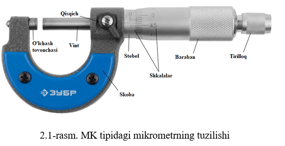

Mashgʻulotning maqsadi: Universal oʻlchash asboblaridan boʻlgan, har xil geometrik kattaliklarni
oʻlchash
uchun ishlatiladigan vikrometrik oʻlchash asboblari, ularning tuzilishi va turlari bilan tanishish.
Detallarning shakli, oʻlchami, kattaliklariga qarab oʻlchash uchun mikrometrik oʻlchash asboblarini
asboblarini tanlash va ulardan mashina detallarini oʻlchash ishlarida foydalanishni oʻrganish.
Mikrometrik asboblarga yalpoq mikrometrlar, mikrometrik chuquroʻlchagich va ichoʻlchagichlar hamda tish
oʻlchagich mikrometrlar kiradi. Ular mikrometrik vintdan va siljimas gaykadan tashkil topadi. Detallarni
oʻlchashda gaykada mikrovintning 360 0 ga aylanishi uni mikrovintda oʻq boʻyicha 0,5 mm
siljishini
ta‘minlaydi.

Mikrometr (2.1-rasm) quyidagi konstruktsiyaga ega. Xalqaning (9) chap tomonida almashinuvchi (1) tovon
presslangan, xalqaning oʻng tomonida esa – (5) stebel (oʻzak) vtulka bilan mikrometrik gayka vazifasini
bajaruvchi vtulkaning oʻng tomonidan tashqi konussimon rezba va aniq ichki silindrik rezba qirqilgan;
ichki rezbaga mikrovint buralgan, tashqisiga esa mikrometrik vint juftidagi tirqishni rostlash uchun
moʻljallangan (4) konussimon gayka buralgan (kiygizilgan). Mikrovint konusli birikma orqali (6) baraban
bilan birikkan. Bu birikmada taranglik qalpoqchani tortish bilan hosil qilinadi. (7) Tirillagich doimo
oʻlchanuvchi kuchni ta‘minlab turadi. Mikrovint gayka yordamida qotiriladi. Stebel (oʻzak)ning tashqi
tsilindrik sirtida boʻylama hisoblash chizig‘i boʻlib, unga yuqoridan hamda pastdan ikkita millimetrli
shkalalar oʻyilgan boʻlib, ular bir-biriga nisbatan 0,5 mm ga siljitilgan. Pastki shkala har 5mm dan 25
mm uzunlikda raqamlangan. Mikrovint baraban bilan 3600 aylantirilganda uning yon sirti (toretsi) oʻq
yoʻnalishi boʻylab 0,5 sm ga siljiydi. Barbanning kesilgan oxirida aylana boʻylab ikkinchi (50
boʻlinishli) shkala har besh boʻlinishda raqamlangan. Mikrovint baraban shkalasi boʻyicha bir boʻlinmaga
aylansa uning oʻq boʻylab 0,01 mm siljishiga toʻg‘ri keladi.
Oʻlchashdan oldin mikrometr qarab chiqiladi, oʻzaro harakatlanuvchi detallari tekshiriladi va nolga
yoki
pastga oʻlchash diapazoniga oʻrnatiladi. Mikrometr koʻrsatishini oʻqishda avvalo, pastki shkaladan
sonlarning butun millimetrdagi hisobi, keyin barabandagi shkaladan millimetrning yuzdan bir ulushlari
olinib butun qismiga qoʻshiladi (hisob 3,23 mm). Agar baraban chekkasi shkalaga chizilgan boʻlakdan
oʻtsa, olingan natijaga yana 0,5 mm ni qoʻshish kerak boʻladi.
Oʻlchashni bajarish uchun mikrometrni stoykaga mahkamlash yoki xalqasidan ushlash kerak.
Oʻlchanuvchi
detal mikrometr oʻlchovchi sirtlari orasiga 1...2 mm tirqish bilan kiritiladi. Keyin mikrovint
tirillagich orqali buralib, detal sirtiga tekkanda toʻxtatiladi. Oʻlchashning normal kuchi
tirillagichning 2...3 marta ovoz chiqarishidan aniqlanadi va keyin mikrovint mahkamlanib koʻrsatishi
oʻqiladi.
Mikrometrik chuquroʻlchagich - boshi berk teshiklar va sirtlar chuqurligini oʻlchashda ishlatiladi.
u
xalqa oʻrnida yassi oʻlchovchi sirtli asos bilan ta‘minlangan. Mikrovint turli uzunlikdagi almashinib
oʻlchovchi sterjenlar bilan biriktirilishi mumkin.
Zamonaviy oʻlchash asboblari ichida electron mikrometrlar muhim oʻrin egallaydi. Elektron
mikrometrning
umumiy koʻrinishi 2.2-rasmda keltirilgan.
Ushbu mikrometrda SR44W rusumli kumush oksidli tok manbai qoʻllaniladi. Agar kuchlanish 1,4 V dan past
boʻlsa, displey ekrani pirpiray boshlaydi, bunday vaqtlarda tok manbaini almashtirish zarur boʻladi.
Agar mikrometr 5 min davomida ishlatilmasa u avtomatik ravishda oʻchadi, asbobni yangidan qoʻshish
uchun
MM/IN tugmachasini bosish yoki qoʻzg‘aluvchan sterjenni harakatlantirish kerak boʻladi.
Turli rezbalarning oʻlchamlarini oʻlchash ishlarida mikrometrik rezba oʻlchagichlar (mikrometrik
rezbomer) qoʻllaniladi. Mikrometrik rezbamerning umumiy koʻrinishi 2.4-rasmda keltirilgan.
Tishli detallarning oʻlchamlarini oʻlchash ishlarini amalga oshirishda mikrometrik tish oʻlchagichlardan
foydalaniladi. 2.5-rasmda mikrometrik tish oʻlchagichning umiy koʻrinishi, 2.6-rasmda esa tuzilishi
tasvirlangan.
Turli detallardagi chuqurliqlarning oʻlchamlarini aniqlashda mikrometrik chuqurlik oʻlchagichlardan
foydalaniladi. 2.7-rasmda mikrometrik chuqurlik oʻlchagichning umumiy koʻrinishi, 2.8-rasmda esa
tuzilishi keltirilgan.
Topshiriq. Berilgan oʻlchash asboblarining tuzilishi, ishlash prinsipi bilan tanishing va
qoʻllanilish
sohalarini aniqlang (2.7-2.10-rasmlar). Har bir oʻlchash asbobining metrologik tavsiflarini oʻrganib
chiqing va olingan xulosalar natijasiga koʻra quyidagi 2.2-jadvalni toʻldiring.
Izoh: Talabalar topshiriqni bajarishda ikki guruhga ajraladilar. Topshiriqni bajarib boʻlishgach,
natijalarni oʻzaro solishtirib toʻg‘ri va notoʻg‘ri javoblarni muhokama qiladilar.
Takrorlash uchun savollar:
1. Mikrometr qanday oʻlchash asboblari turiga kiradi?
2. Mikrometrning tuzilishini aytib bering.
3. Mikrometrik oʻlchash asboblarnining qanday turlarini bilasiz?
4. Mikrometrik rezbomer qanday maqsadlarda qoʻllaniladi?
5. Mikrometr tish oʻlchagichlardan qanday oʻlchashlarda foydalaniladi?
6. Mikrometr chuqurlik oʻlchagichlardan qanday oʻlchashlarda foydalaniladi?
7. Mikrometrik oʻlchash asboblaridan oʻlchash natijasi qanday oʻqib olinadi?